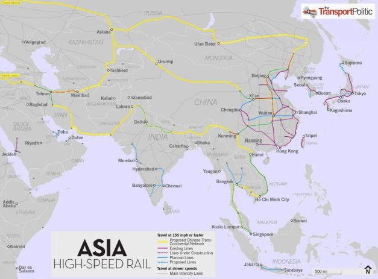

Chapter Eleven:
China’s Land Bridge to Europe[344]
The prospect of an unparalleled Eurasian economic boom lasting into the next Century and beyond is at hand. The first steps binding the vast economic space are being constructed with a number of little-publicized rail links connecting China, Russia, Kazakhstan and parts of Western Europe. Rail infrastructure is a major key to building vast new economic markets across Eurasia.
Strategic Role of Economic Infrastructure
The cohesion of the landmass of Eurasia and a future market for Chinese export growth to counter the declining markets in North America and the EU depends on the creation of new markets. In turn, new markets in and across Eurasia and beyond into Africa and Western Europe depend on the construction of massive new links among high-speed rail, modern highways, telecommunications, electricity and energy infrastructures.
Financing construction of such infrastructures, with state backing from China, from Russia and the nations of Eurasia, including Kazakhstan and even Iran, is not a question of money. It never is. Money is a political creation of sovereign governments issuing credits.
China still retains an enormous advantage over the USA and EU nations in terms of the ability of the State to issue bonds for such long-term infrastructure. Were China and Russia and the other states of the SCO to genuinely cooperate and mutually plan such infrastructure and fund it internally, and not on dollar or Euro capital markets, it would generate an economic renaissance not only for the next three or more decades for Chinese industry, but also for Russia and Central Asia, as well as into the economically troubled economies of the EU in Western Europe.
China’s Strategic Land Bridge
The prospect of an unparalleled Eurasian economic boom lasting into the next Century and beyond is at hand. The first steps binding the vast economic space are being constructed with a number of little-publicized rail links connecting China, Russia, Kazakhstan and parts of Western Europe. Rail infrastructure is a major key to building vast new economic markets across Eurasia.
China and Turkey are in discussions to build a new high-speed railway link across Turkey. If completed it would be the country’s largest railway project ever, even surpassing the pre-World War I Berlin-Baghdad Railway link. The project was an important agenda item in early April 2012 talks between the Turkish and Chinese governments. The proposed rail link would run from Kars on the easternmost border with Armenia, through the Turkish interior on to Istanbul where it would connect to the Marmaray rail tunnel now under construction that runs under the Bosphorus strait. Then it would continue to Edirne near the border to Greece and Bulgaria in the European Union. It will cost an estimated $35 billion. The realization of the Turkish link would complete a Chinese Trans-Eurasian Rail Bridge project that would bring freight from China to Spain and England.[345]
The Kars-Edirne line would reduce travel time across Turkey by two-thirds from 36 hours down to 12. Under an agreement signed between China and Turkey in October 2010, China has agreed to extend loans of $30 billion for the planned rail network.2 In addition a Baku-Tbilisi-Kars (BTK) railway connecting Azerbaijan’s capital of Baku to Kars is under construction, which greatly increases the strategic importance of the Edirne-Kars line. For China it would put a critical new link in its railway infrastructure across Eurasia to markets in Europe and beyond.
(Map: Yunus Emre Hatunoğlu)
The visit of Turkey’s President Erdogan to Beijing was significant for other reasons. It was the first such high level trip of a Turkish Prime Minister to China since 1985. The fact that Erdogan was also granted a high-level meeting with Chinese Vice President Xi Jinping, and was granted an extraordinary visit to China’s oil-rich Xinjiang Province also shows the high priority China is placing on its relations with Turkey, a key emerging strategic force in the Middle East.
Xinjiang is a highly sensitive part of China as it hosts some 9 million ethnic Uyghurs who share a Turkic heritage with Turkey as well as nominal adherence to the Turkish Sunni branch of Islam. In July 2009 the US government, acting through the National Endowment for Democracy, the regime-change NGO it finances, backed a major Uyghur uprising in which many Han Chinese shop owners were killed or injured. Washington in turn blamed the riots on Beijing as part of a strategy of escalating pressure on China.[346] During Uyghur riots in Xinjiang in 2009, Erdogan accused Beijing of “genocide” and attacked the Chinese on human rights, a dicey issue for Turkey given their ethnic Kurd problems. Clearly economic priorities from both sides have now changed the political calculus.
Building the world’s greatest market: Eurasia
Contrary to the dogma of Milton Friedman and his followers, markets are never “free.” They are always man-made. The essential element to create new markets is building infrastructure, and for the vast landmass of Eurasia railroad linkages are essential to those new markets.
With the end of the Cold War in 1990 the vast under-developed land space of Eurasia became open again. This space contains some forty percent of total land in the world, much of it prime unspoiled agriculture land; it contains three-fourths of the world’s population, an asset of incalculable worth. It consists of some eighty eight of the world’s countries and three-fourths of known world energy resources as well as every mineral known needed for industrialization. North America as an economic potential, rich as she is, pales by comparison.
The Turkish-China railway discussion is but one part of a vast Chinese strategy to weave a network of inland rail connections across the Eurasian Continent. The aim is to literally create the world’s greatest new economic space and in turn a huge new market for not just China but all Eurasian countries, the Middle East and Western Europe. Direct rail service is faster and cheaper than either ships or trucks, and much cheaper than airplanes. For manufactured Chinese or other Eurasian products the rail land bridge links are creating vast new economic trading activity all along the rail line.
Two factors have made this prospect realizable for the first time since the Second World War. First the collapse of the Soviet Union has opened up the land space of Eurasia in entirely new ways, as has the opening of China to Russia and its Eurasian neighbors, overcoming decades of mistrust. This is being met by the eastward expansion of the European Union to the countries of the former Warsaw Pact.
The demand for faster rail transport over the vast Eurasian distances is clear. China’s container port activities, and that of its European and North American destinations, are reaching a saturation point as volumes of container traffic explode at double-digit rates. Singapore recently displaced Rotterdam as the world’s largest port in volume terms. The growth rate for container port throughput in China in 2006, before the world financial crisis, was some 25% annually. In 2007 Chinese ports accounted for some 28% of world container port throughput.[347]
However there is another aspect to the Chinese and, to an extent, the Russian land bridge strategies. By moving trade flows over land, it is more secure in the face of escalating military tensions between the nations of the Shanghai Cooperation Organization, especially China and Russia on one hand, and NATO on the other. Sea transport must flow through highly vulnerable narrow passageways or chokepoints such as the Malaysian Straits of Malacca.
The Turkish Kars-Edirne railway would form an integral part of an entire web of Chinese-initiated rail corridors across the Eurasian landmass. Following the example of how rail infrastructure transformed the economic space of Europe and later of America during the late 19th Century, the Chinese government, which today stands as the world’s most efficient railroad constructor, has quietly been extending its rail links into Central Asia and beyond for several years. They have proceeded in segments, which is one reason the vast ambition of their grand rail infrastructure has drawn so little attention to date in the West outside the shipping industry.
China builds Second Eurasian Land Bridge
By 2011 China had completed a Second Eurasian Land Bridge running from China’s port of Lianyungang on the East China Sea through to Kazakhstan’s Druzhba, and on to Central Asia, West Asia and then to various European destinations and finally to Rotterdam Port of Holland on the Atlantic coast.
The Second Eurasian Land Bridge is a new railway connecting the Pacific and the Atlantic that was completed by China to Druzhba in Kazakhstan. This newest Eurasia land bridge extends west in China through about 360,000 square kilometers, some 37% of the total land space of China. About 400 million people live in these provinces, which accounts for 30% of the total population of the country. Outside of China, the land bridge covers over 40 countries and regions in both Asia and Europe, and is particularly important for the countries in Central and West Asia that don’t have sea outlets.
In 2011 China’s Vice Premier Wang Qishan announced plans to build a new high-speed railway link within Kazakhstan, linking the cities of Astana and Almaty, to be ready in 2015. The Astana-Almaty line, with a total length of 1050 kilometers, employing China’s advanced rail-building technology, will allow high-speed trains to run at 350 kilometers per hour.
DB Schenker Rail Automotive is now transporting auto parts from Leipzig to Shenyang in northeastern China for BMW... “With a transit time of 23 days, the direct trains are twice as fast as maritime transport, followed by over-the-road transport to the Chinese hinterland”... The route reaches China via Poland, Belarus, and Russia... Containers have to be transferred by crane to different gauges twice – first to Russian broad gauge at the Poland-Belarus border, then back to standard gauge at the Russia-China border in Manzhouli.[348]
In May 2011 a daily direct rail freight service was launched between the Port of Antwerp, Europe’s second-largest, and Chongqing, the industrial hub in China’s southwest. That greatly speeded rail freight transport across Eurasia to Europe. Compared to the 36 days for maritime transport from east China’s ports to west Europe, the Antwerp-Chongqing Rail Freight service now takes 20 to 25 days, and the aim is to cut that to 15 to 20 days.
Westbound cargo includes automotive and technological goods; eastbound shipments are mostly chemicals. The project was a major priority for the Antwerp Port and the Belgian government in cooperation with China and other partners. The service is run by Swiss inter-modal logistics provider Hupac, their Russian partner Russkaya Troyka, and Eurasia Good Transport over a distance of more than 10,000km, starting from the Port of Antwerp through to Germany and Poland, and further to Ukraine, Russia and Mongolia before reaching Chongqing in China.[349]
The Second Eurasian Land Bridge runs 10,900 kilometers in length, with some 4100 kilometers of that in China. Within China the line runs parallel to one of the ancient routes of the Silk Road. The rail line continues across China into Druzhba where it links with the broader gauge rail lines of Kazakhstan – the largest inland country in the world. As Chinese rail and highways have expanded west, trade between Kazakhstan and China has been booming. From January to October 2008, goods passing through the Khorgos port between the two nations reached 880,000 tons – over 250% growth compared with the same period a year before. Trade between China and Kazakhstan is expected to grow 3 to 5 fold by 2013. As of 2008, only about 1% of the goods shipped from Asia to Europe were delivered by overland routes, meaning that the room for expansion is considerable.[350]
From Kazakhstan the lines continue via Russia and Belarus over Poland to the markets of the European Union.
Another line goes to Tashkent in Uzbekistan, Central Asia’s largest city of some two millions. Another line goes west to Turkmenistan’s capital Asgabat and to the border of Iran.[351] With some additional investment, these links, now tied to the vast expanse and markets of China, could open new economic possibilities in much-neglected regions of Central Asia.
The Shanghai Cooperation Organization (SCO) could serve as a well-suited vehicle for coordinating a broad Eurasian rail infrastructure coordination to maximize these initial rail links. The members of the SCO, formed in 2001, include China, Kazakhstan, Russia, Kyrgyzstan, Tajikistan, and Uzbekistan, while Iran, India, Mongolia and Pakistan have observer status.
Russia’s Land Bridge
Russia is well-positioned to benefit greatly from such an SCO strategy. The First Eurasian Land Bridge runs through Russia along the Trans-Siberian Railway, first completed in 1916 to unify the Russian Empire. The Trans-Siberian remains the longest single rail line in the world at 9,297 kilometers, a tribute to the vision of Russian finance minister Sergei Witte in the 1890s. The Trans-Siberian Railway, also called the Northern East-West Corridor, runs from the Russian Far East port of Vladivostok, with connections in Europe linking to the Port of Rotterdam, some 13,000 kilometers away. At present it is the less attractive for Pacific-to-Atlantic freight because of maintenance problems and maximum speeds of 55 km.
There are attempts to better use the Trans-Siberian Land Bridge. In January 2008 a long distance Eurasian rail freight service, the “Beijing-Hamburg Container Express” was successfully tested by the German railway Deutsche Bahn. It completed the 10,000 km (6,200 miles) journey in 15 days to link the Chinese capital to the German port city of Hamburg, going through Mongolia, the Russian Federation, Belarus and Poland. By ship to the same markets takes double the time or some 30 days.
Were the Trans-Siberian railway passage across Russian Eurasian space to be modernized and upgraded to accommodate high-speed freight traffic, it would add a significant new dimension to the economic development of Russia’s interior regions. The Trans-Siberian is double-tracked and electrified. By minimally improving some segments to insure a better integration of all the elements, it would be a more attractive option for Eurasian freight to the west.
There are strong indications the new Putin presidency will turn more of its attention to Eurasia. Modernization of the First Eurasian Land Bridge would be a logical way to accomplish much of that development by literally creating new markets and new economic activity. With the bond markets of the United States and Europe flooded with toxic waste and state bankruptcy fears, issuance of Russian state bonds for modernizing existing rails – or even building a new parallel high-speed rail land bridge – based on the certainty of growing freight traffic across Eurasia would have little difficulty finding eager investors.
Russia is currently in discussion with China and Chinese rail constructors who are bidding on construction of a planned $20 billion of new high-speed Russian rail track to be completed before the 2018 Russian hosting of the FIFA World Cup soccer summit. China’s experience in building some 12,000 km of high speed rail in record time is a major asset for China’s bid. Significantly, Russia plans to raise $10 billion of the cost by issuing new railroad bonds.[352]
A Third Eurasian Land Bridge?
In 2009 at the Fifth Pan-Pearl River Delta Regional (PPRD) Cooperation and Development Forum, a government-sponsored event, the Yunnan provincial government announced its intention to accelerate construction of needed infrastructure to build a third Eurasian continental land bridge that will link south China to Rotterdam via Turkey over land. This is part of what Turkey’s President Erdogan and Chinese Prime Minister Wen Jiabao discussed in Beijing in April 2014.
The network of inland roads for the land bridge within Yunnan province will be completed by 2015, said Yunnan governor Qin Guangrong. The project starts from coastal ports in Guangdong, with the Port of Shenzhen being the most important. It will ultimately go all the way through Kunming to Myanmar, Bangladesh, India, Pakistan and Iran, entering Europe from Turkey.[353]
The route would cut some 6,000-km from the sea journey between the Pearl River Delta and Rotterdam, and allow production from China’s eastern manufacturing centers to reach Asia, Africa and Europe. The proposal is for completing a series of rail and highway links totaling some 1,000 Km.
In neighboring Myanmar a mere 300 km of railways and highways are lacking in order to link the railways in Yunnan with the highway network of Myanmar and South Asia. It will help China pave the way for building a land channel to the Indian Ocean.
The third Eurasian Land Bridge will cross 20 countries in Asia and Europe and have a total length of about 15,000 kilometers, which is 3,000 to 6,000 kilometers shorter than the sea route entering at the Indian Ocean from the southeast coast via the Malacca Straits. The total annual trade volume of the regions the route passes through was nearly US$300 billion in 2009. Ultimately the plan is for a branch line that would also start in Turkey, cross Syria and Palestine, and end in Egypt, facilitating transportation from China to Africa.
Clearly the Pentagon’s AFRICOM and the US-backed Arab Spring unrest directly impact that extension, though for how long at this point is unclear.[354]
The geopolitical dimension
Not every major international player is pleased about the growing linkages binding the economies of Eurasia with western Europe and Africa. In his book, “The Grand Chessboard: American Primacy and its Geostrategic Imperatives,” former Presidential adviser Zbigniew Brzezinski noted,
In brief, for the United States, Eurasian geo-strategy involves the purposeful management of geo-strategically dynamic states… To put it in a terminology that harkens back to the more brutal age of ancient empires, the three grand imperatives of imperial geo-strategy are to prevent collusion and to maintain security dependence among the vassals, to keep tributaries pliant and protected, and to keep the barbarians from coming together.[355]
The “barbarians” that Brzezinski refers to are China and Russia and all in between. The Brzezinski term “imperial geo-strategy” refers to US strategic foreign policy. The “vassals” he identifies in the book include countries like Germany, Japan and other NATO “allies” of the US. Brzezinski’s geopolitical perspective remains US foreign policy today.
The prospect of an unparalleled Eurasian economic boom lasting into the next Century and beyond is at hand.
The first sinews of binding the vast economic space have been put in place or are being constructed with these rail links. It is becoming clear to more people in Europe, Africa, the Middle East and Eurasia – including China and Russia – that their natural tendency to build these markets faces only one major obstacle: NATO and the US Pentagon’s Full Spectrum Dominance obsession.
In the period prior to World War I it was the decision in Berlin to build a rail land link to and through the Turkish Ottoman Empire, from Berlin to Baghdad, that was the catalyst for British strategists to incite events that plunged Europe into the most destructive war in history to that date. This time we have a chance to avoid a similar fate with the Eurasian development. More and more the economically stressed economies of the EU are beginning to look more to the east and less to their west across the Atlantic for Europe’s economic future.
[344] This chapter is reproduced from the author’s original article, “Eurasian Economic Boom and Geopolitics: China’s Land Bridge to Europe: The China-Turkey High Speed Railway,” published April 27, 2012, on globalresearch.ca
[345] Sunday’s Zaman, “Turkey, China mull $35 billion joint high-speed railway project,” Istanbul, April 14, 2012, http://www.todayszaman.com/_turkey-china-mull-35-bln-joint-high-speed-railway-project_277360.html.
[346] F. William Engdahl, “Washington is Playing a Deeper Game with China,” Global Research, July 11, 2009, http://www.globalresearch.ca/index.php?context=va&aid=14327.
[347] UNCTAD, “Port and multimodal transport developments,” 2008, http://www.thefreelibrary.com/Chapter+5%3a+Port+and+multimodal+transport+developments.-a0218028142.
[348] “BMW Rides Orient Express to China,” http://www.inboundlogistics.com/cms/article/global-logistics-october-2011/, cited in F. William Engdahl, “Eurasian Economic Boom and Geopolitics: China’s Land Bridge to Europe: The China-Turkey High Speed Railway,” Global Research, April 27, 2012, http://www.globalresearch.ca/eurasian-economic-boom-and-geopolitics-china-s-land-bridge-to-europe-the-china-turkey-high-speed-railway/30575
[349] Aubrey Chang, “Antwerp-Chongqing Direct Rail Freight Link Launched,” May 12, 2011, http://www.industryleadersmagazine.com/antwerp-chongqing-direct-rail-freight-link-launched/
[350] Ibid.
[351] Shigeru Otsuka, “Central Asia’s Rail Network and the Eurasian Land Bridge,” Japan Railway & Transport Review 28, September 2001, pp. 42-49.
[352] CNTV, “Russian rail official: Chinese bidder competitive,” November 21,2011, http://english.cntv.cn/program/bizasia/20111121/110092.shtml
[353] Xinhua, “Yunnan accelerates construction of third Eurasia land bridge,” 2009, http://www.shippingonline.cn/news/newsContent.asp?id=10095
[354] Li Yingqing and Guo Anfei, “Third land link to Europe envisioned,” China Daily, July 2, 2009, http://www.chinadaily.com.cn/china/2009-07/02/content_8345835.htm.
[355] Zbigniew Brzezinski, The Grand Chessboard, 1997, Basic Books, p. 40. See F. William Engdahl, A Century of War: Anglo-American Oil Politics and the New World Order, Wiesbaden, 2011, edition.engdahl, for details of the role of the German Baghdad rail link in World War I.